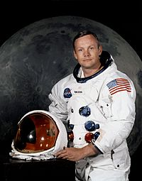

Bio
Neil Alden Armstrong, né le 5 août 1930 à Wapakoneta dans l'Ohio aux États-Unis et mort le 25 août 2012 à Cincinnati dans le même État, est un astronaute américain, pilote d'essai, aviateur de l'United States Navy et professeur. Il est le premier homme à avoir posé le pied sur la Lune le 21 juillet 1969 UTC, durant la mission Apollo 11, prononçant alors une phrase restée célèbre : « C'est un petit pas pour [un] homme, [mais] un bond de géant pour l'humanité ».
Armstrong obtient une licence en aéronautique à l'université Purdue. Ses études sont momentanément interrompues en 1950 par son service militaire dans la marine de guerre des États-Unis. Il y suit une formation de pilote d'avion à réaction. Basé sur le porte-avions USS Essex, il participe à la guerre de Corée et réalise 78 missions sur des chasseurs F9F Panther. Après avoir obtenu son diplôme, il intègre, en 1955, le NACA, organisme de recherche aéronautique ancêtre de la NASA. Devenu pilote d'essai, il effectue plus de 900 vols pour mettre au point des bombardiers et des chasseurs ; il pilote également les avions-fusées expérimentaux Bell X-1B, Bell X-5 et North American X-15. En 1962, il rentre dans le corps des astronautes de l'agence spatiale américaine, la NASA.
En 1966, Armstrong effectue son premier vol spatial à bord de Gemini 8 et réalise le premier amarrage de deux engins spatiaux. Il est sélectionné comme commandant d'Apollo 11, la première mission à se poser sur la Lune. Le 20 juillet 1969, il pilote le module lunaire Apollo qui alunit. Avec son copilote Buzz Aldrin, Armstrong réalise une sortie extravéhiculaire d'une durée de deux heures vingt qui constitue les premiers pas de l'homme sur un autre corps que la Terre. Immédiatement après sa mission, Armstrong quitte le corps des astronautes. Il occupe un temps un poste d'enseignant dans le domaine aérospatial et sert de porte-parole pour le compte de plusieurs sociétés américaines. Il est membre des commissions d'enquête formées après l'interruption de la mission Apollo 13 (1970) et l'accident de la navette spatiale Challenger (1986).
Reaching for the Stars
Le 7 août 2012, Neil Armstrong est opéré du cœur. Le 25 du même mois, à la suite de complications cardio-vasculaires dues à cette opération, il meurt à l'âge de 82 ans à Cincinnati, dans l'Ohio67.
Il reçoit un hommage unanime de la classe politique aux États-Unis. Le président Obama a déclaré : « Neil figure parmi les plus grands héros américains — non seulement de son époque, mais de tous les temps69 ». Son ancien collègue de la mission Apollo, le pilote du module de commande Michael Collins, a déclaré à la NASA que Neil Armstrong lui « manquerait terriblement ». Buzz Aldrin a quant à lui déclaré qu'il était profondément attristé de la perte d'un si bon ami70.
Ses obsèques, intimes, se déroulent le 31 août 2012 à Indian Hill (Ohio), dans la banlieue de Cincinnati. En cette occasion, tous les drapeaux américains sont mis en berne. Le 14 septembre, le lendemain d'une commémoration à la cathédrale nationale de Washington, ses cendres sont dispersées dans l'océan Atlantique lors d'une cérémonie à bord du USS Philippine Sea (CG-58)71.